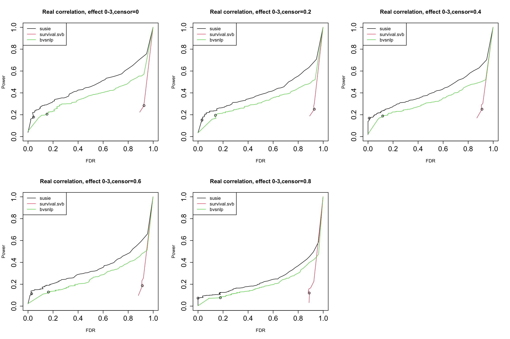
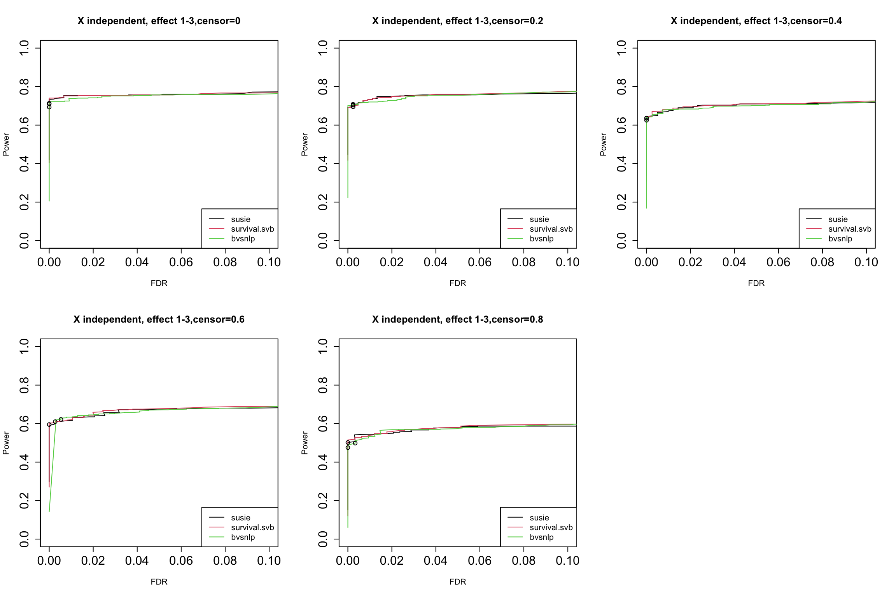
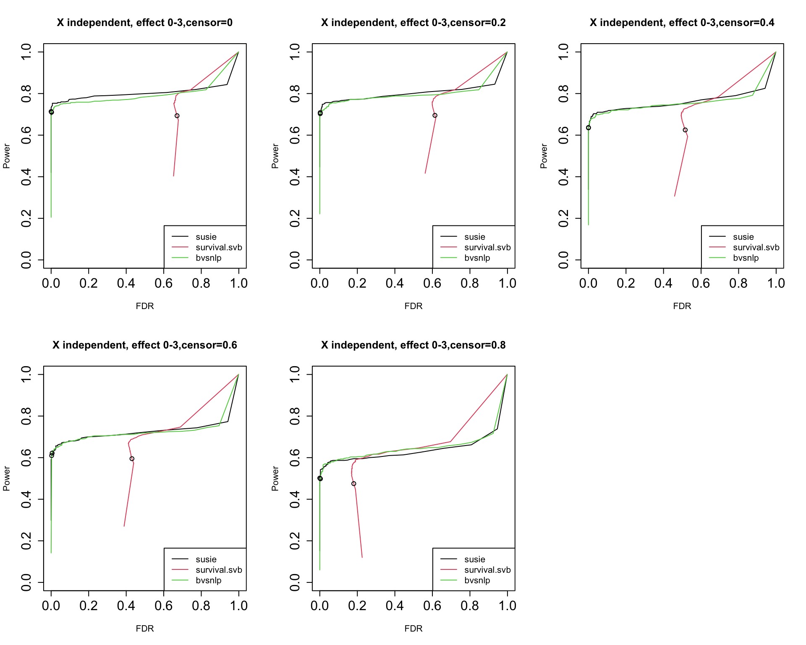
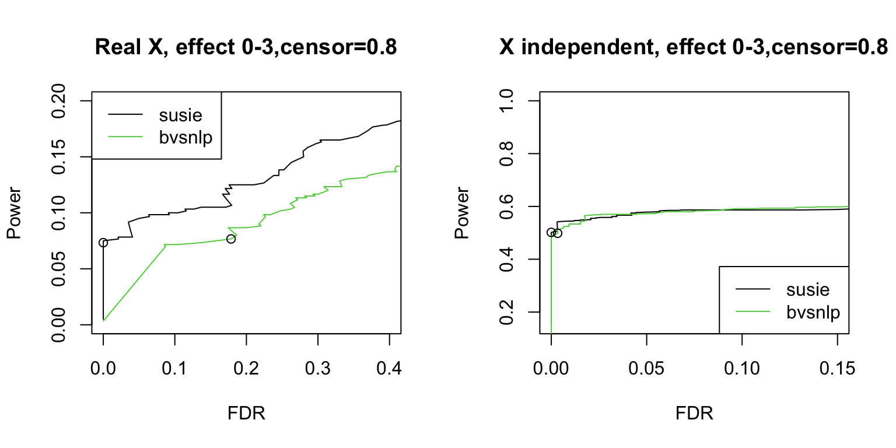
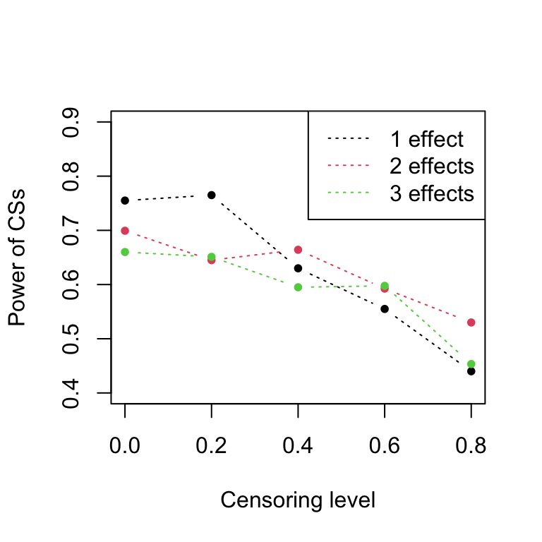
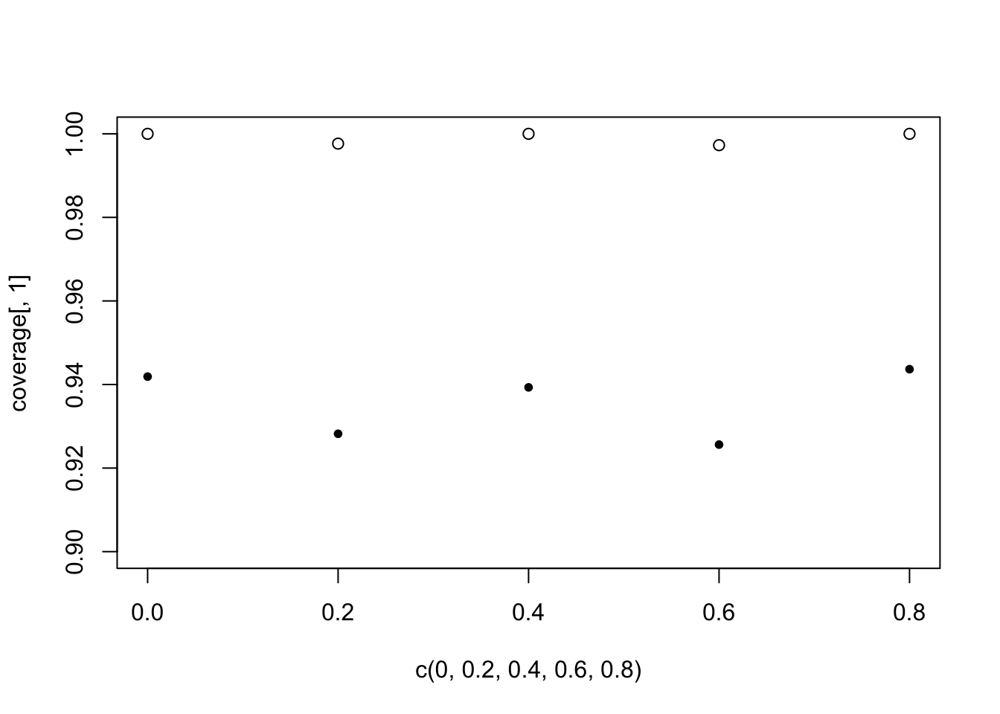

Last updated: 2023-06-01
Checks: 7 0
Knit directory: survival-susie/
This reproducible R Markdown analysis was created with workflowr (version 1.6.2). The Checks tab describes the reproducibility checks that were applied when the results were created. The Past versions tab lists the development history.
Great! Since the R Markdown file has been committed to the Git repository, you know the exact version of the code that produced these results.
Great job! The global environment was empty. Objects defined in the global environment can affect the analysis in your R Markdown file in unknown ways. For reproduciblity it’s best to always run the code in an empty environment.
The command set.seed(20230201) was run prior to running the code in the R Markdown file. Setting a seed ensures that any results that rely on randomness, e.g. subsampling or permutations, are reproducible.
Great job! Recording the operating system, R version, and package versions is critical for reproducibility.
Nice! There were no cached chunks for this analysis, so you can be confident that you successfully produced the results during this run.
Great job! Using relative paths to the files within your workflowr project makes it easier to run your code on other machines.
Great! You are using Git for version control. Tracking code development and connecting the code version to the results is critical for reproducibility.
The results in this page were generated with repository version b54c322. See the Past versions tab to see a history of the changes made to the R Markdown and HTML files.
Note that you need to be careful to ensure that all relevant files for the analysis have been committed to Git prior to generating the results (you can use wflow_publish or wflow_git_commit). workflowr only checks the R Markdown file, but you know if there are other scripts or data files that it depends on. Below is the status of the Git repository when the results were generated:
Ignored files:
Ignored: .DS_Store
Ignored: .Rhistory
Ignored: .Rproj.user/
Ignored: data/.DS_Store
Unstaged changes:
Modified: analysis/run_ser_simple_dat.Rmd
Modified: analysis/ser_survival.Rmd
Modified: data/dsc3/susie.lbf.rds
Note that any generated files, e.g. HTML, png, CSS, etc., are not included in this status report because it is ok for generated content to have uncommitted changes.
These are the previous versions of the repository in which changes were made to the R Markdown (analysis/dsc_sim4.Rmd) and HTML (docs/dsc_sim4.html) files. If you’ve configured a remote Git repository (see ?wflow_git_remote), click on the hyperlinks in the table below to view the files as they were in that past version.
| File | Version | Author | Date | Message |
|---|---|---|---|---|
| Rmd | b54c322 | yunqiyang0215 | 2023-06-01 | wflow_publish("analysis/dsc_sim4.Rmd") |
| html | ba8ed20 | yunqiyang0215 | 2023-05-11 | Build site. |
| Rmd | 6179bdc | yunqiyang0215 | 2023-05-11 | wflow_publish("analysis/dsc_sim4.Rmd") |
| html | 6d75d88 | yunqiyang0215 | 2023-05-08 | Build site. |
| Rmd | 42db881 | yunqiyang0215 | 2023-05-08 | wflow_publish("analysis/dsc_sim4.Rmd") |
| html | ade6051 | yunqiyang0215 | 2023-05-08 | Build site. |
| Rmd | 2093fd8 | yunqiyang0215 | 2023-05-08 | wflow_publish("analysis/dsc_sim4.Rmd") |
| html | 2f6a270 | yunqiyang0215 | 2023-05-08 | Build site. |
| Rmd | eba198b | yunqiyang0215 | 2023-05-08 | wflow_publish("analysis/dsc_sim4.Rmd") |
| html | 178ddf7 | yunqiyang0215 | 2023-05-08 | Build site. |
| Rmd | 04442d9 | yunqiyang0215 | 2023-05-08 | wflow_publish("analysis/dsc_sim4.Rmd") |
| html | f07fc2e | yunqiyang0215 | 2023-05-08 | Build site. |
| Rmd | 9ff8766 | yunqiyang0215 | 2023-05-08 | wflow_publish("analysis/dsc_sim4.Rmd") |
Version 4 simulation results, comparing power vs. FDR across 3 methods. I vary the threshold for claiming effect variables based on marginal PIP value.
Difference between v3 and v4 simulation:
Only susie has been changed, not the other two methods.
Used corrected ABF instead of original Wakefeld ABF.
Computed susie credible sets.
Conclusion:
After using corrected ABF, susie performance is improved. Now it’s better than bvsnlp almost all the time.
Power of the credible sets and coverage of credible sets also look fine.
calculate_tpr_vs_fdr <- function(pip, is_effect, ts){
res <- matrix(NA, nrow = length(ts), ncol = 2)
colnames(res) = c("tpr", "fdr")
for (i in 1:length(ts)){
pred_pos = pip >= ts[i]
tp = pip >= ts[i] & is_effect == 1
fp = pip >= ts[i] & is_effect == 0
tpr = sum(tp)/sum(is_effect)
fdr = sum(fp)/sum(pred_pos)
res[i, ] = c(tpr, fdr)
}
return(res)
}
# coverage: the proportion of CSs that contain an effect variable
# @param dat_indx: the indx for the data from dsc
calculate_cs_coverage = function(dat_indx){
contain_status = c()
for (indx in dat_indx){
cs = susie$susie.cs[[indx]]$cs
true_effect = which(susie$simulate.is_effect[[indx]] == 1)
if (!is.null(cs)){
for (j in 1:length(cs)){
res = ifelse(sum(true_effect %in% unlist(cs[j])) == 1, 1, 0)
contain_status = c(contain_status, res)
}
}
}
coverage = sum(contain_status)/length(contain_status)
return(coverage)
}
# @param dat_indx: the indx for the data from dsc
# @p: number of variables in each simulation replicate.
get_cs_effect = function(dat_indx, p){
cs_effect = c()
for (indx in dat_indx){
effect = rep(0, p)
cs_effect_indx = c(unlist(susie$susie.cs[[indx]]$cs))
effect[cs_effect_indx] = 1
cs_effect = c(cs_effect, effect)
}
return(cs_effect)
}susie = readRDS("./data/dsc3/susie.cs.rds")
survsvb = readRDS("./data/dsc3/survsvb.rds")
bvsnlp = readRDS("./data/dsc3/bvsnlp.rds")par(mfrow = c(2,3), cex.axis = 1.5)
censor_lvl = c(0, 0.2, 0.4, 0.6, 0.8)
for (i in 1:5){
indx = which(susie$simulate.cor_type == "real" & susie$simulate.censor_lvl == censor_lvl[i])
pip.susie = unlist(lapply(indx, function(x) susie$susie.pip[[x]]))
pip.survsvb = unlist(lapply(indx, function(x) survsvb$survivalsvb.pip[[x]]))
pip.bvsnlp = unlist(lapply(indx, function(x) bvsnlp$bvsnlp.pip[[x]]))
is_effect = unlist(lapply(indx, function(x) susie$simulate.is_effect[[x]]))
ts = seq(from = 0, to = 1, by = 0.01)
res.susie = calculate_tpr_vs_fdr(pip.susie, is_effect, ts)
res.svb = calculate_tpr_vs_fdr(pip.survsvb, is_effect, ts)
res.bvsnlp = calculate_tpr_vs_fdr(pip.bvsnlp, is_effect, ts)
plot(res.susie[,2], res.susie[,1], type = "l", xlim = c(0,1), ylim = c(0, 1), xlab = "FDR", ylab = "Power",
main = paste0("Real correlation, effect 0-3", ",censor=", censor_lvl[i]))
lines(res.svb[,2], res.svb[,1], type = "l", col = 2)
lines(res.bvsnlp[,2], res.bvsnlp[,1], type = "l", col = 3)
points(res.susie[96,2], res.susie[96, 1])
points(res.svb[96,2], res.svb[96, 1])
points(res.bvsnlp[96,2], res.bvsnlp[96, 1])
legend("topleft", legend = c("susie", "survival.svb", "bvsnlp"), col = c(1,2,3), lty = 1)
}
| Version | Author | Date |
|---|---|---|
| f07fc2e | yunqiyang0215 | 2023-05-08 |
The dots indicate PIP threshold = 0.95
par(mfrow = c(2,3),cex.axis = 1.5)
censor_lvl = c(0, 0.2, 0.4, 0.6, 0.8)
for (i in 1:5){
indx = which(susie$simulate.cor_type == "independent" & susie$simulate.censor_lvl == censor_lvl[i] & susie$simulate.num_effect != 0)
pip.susie = unlist(lapply(indx, function(x) susie$susie.pip[[x]]))
pip.survsvb = unlist(lapply(indx, function(x) survsvb$survivalsvb.pip[[x]]))
pip.bvsnlp = unlist(lapply(indx, function(x) bvsnlp$bvsnlp.pip[[x]]))
is_effect = unlist(lapply(indx, function(x) susie$simulate.is_effect[[x]]))
ts = seq(from = 0, to = 1, by = 0.01)
res.susie = calculate_tpr_vs_fdr(pip.susie, is_effect, ts)
res.svb = calculate_tpr_vs_fdr(pip.survsvb, is_effect, ts)
res.bvsnlp = calculate_tpr_vs_fdr(pip.bvsnlp, is_effect, ts)
plot(res.susie[,2], res.susie[,1], type = "l", xlim = c(0, 0.1), ylim = c(0, 1), xlab = "FDR", ylab = "Power",
main = paste0("X independent, effect 1-3", ",censor=", censor_lvl[i]))
lines(res.svb[,2], res.svb[,1], type = "l", col = 2)
lines(res.bvsnlp[,2], res.bvsnlp[,1], type = "l", col = 3)
points(res.susie[96,2], res.susie[96, 1])
points(res.svb[96,2], res.svb[96, 1])
points(res.bvsnlp[96,2], res.bvsnlp[96, 1])
legend("bottomright", legend = c("susie", "survival.svb", "bvsnlp"), col = c(1,2,3), lty = 1)
}
| Version | Author | Date |
|---|---|---|
| f07fc2e | yunqiyang0215 | 2023-05-08 |
The dots indicate PIP threshold = 0.95.
par(mfrow = c(2,3),cex.axis = 1.5)
censor_lvl = c(0, 0.2, 0.4, 0.6, 0.8)
for (i in 1:5){
indx = which(susie$simulate.cor_type == "independent" & susie$simulate.censor_lvl == censor_lvl[i])
pip.susie = unlist(lapply(indx, function(x) susie$susie.pip[[x]]))
pip.survsvb = unlist(lapply(indx, function(x) survsvb$survivalsvb.pip[[x]]))
pip.bvsnlp = unlist(lapply(indx, function(x) bvsnlp$bvsnlp.pip[[x]]))
is_effect = unlist(lapply(indx, function(x) susie$simulate.is_effect[[x]]))
ts = seq(from = 0, to = 1, by = 0.01)
res.susie = calculate_tpr_vs_fdr(pip.susie, is_effect, ts)
res.svb = calculate_tpr_vs_fdr(pip.survsvb, is_effect, ts)
res.bvsnlp = calculate_tpr_vs_fdr(pip.bvsnlp, is_effect, ts)
plot(res.susie[,2], res.susie[,1], type = "l", xlim = c(0, 1), ylim = c(0, 1), xlab = "FDR", ylab = "Power",
main = paste0("X independent, effect 0-3", ",censor=", censor_lvl[i]))
lines(res.svb[,2], res.svb[,1], type = "l", col = 2)
lines(res.bvsnlp[,2], res.bvsnlp[,1], type = "l", col = 3)
points(res.susie[96,2], res.susie[96, 1])
points(res.svb[96,2], res.svb[96, 1])
points(res.bvsnlp[96,2], res.bvsnlp[96, 1])
legend("bottomright", legend = c("susie", "survival.svb", "bvsnlp"), col = c(1,2,3), lty = 1)
}
| Version | Author | Date |
|---|---|---|
| f07fc2e | yunqiyang0215 | 2023-05-08 |
The dots indicate PIP threshold = 0.95.
For independent X, susie has ~1-1.5% less power than bvsnlp when fdr is around 0.1.
par(mfrow = c(1,2))
censor_lvl = 0.8
indx = which(susie$simulate.cor_type == "real" & susie$simulate.censor_lvl == censor_lvl)
pip.susie = unlist(lapply(indx, function(x) susie$susie.pip[[x]]))
pip.bvsnlp = unlist(lapply(indx, function(x) bvsnlp$bvsnlp.pip[[x]]))
is_effect = unlist(lapply(indx, function(x) susie$simulate.is_effect[[x]]))
ts = seq(from = 0, to = 1, by = 0.01)
res.susie = calculate_tpr_vs_fdr(pip.susie, is_effect, ts)
res.bvsnlp = calculate_tpr_vs_fdr(pip.bvsnlp, is_effect, ts)
plot(res.susie[,2], res.susie[,1], type = "l", xlim = c(0, 0.4), ylim = c(0,0.2), xlab = "FDR", ylab = "Power", main = paste0("Real X, effect 0-3", ",censor=", censor_lvl))
lines(res.bvsnlp[,2], res.bvsnlp[,1], type = "l", col = 3)
points(res.susie[96,2], res.susie[96, 1])
points(res.bvsnlp[96,2], res.bvsnlp[96, 1])
legend("topleft", legend = c("susie", "bvsnlp"), col = c(1,3), lty = 1)
#####
indx = which(susie$simulate.cor_type == "independent" & susie$simulate.censor_lvl == censor_lvl)
pip.susie = unlist(lapply(indx, function(x) susie$susie.pip[[x]]))
pip.bvsnlp = unlist(lapply(indx, function(x) bvsnlp$bvsnlp.pip[[x]]))
is_effect = unlist(lapply(indx, function(x) susie$simulate.is_effect[[x]]))
ts = seq(from = 0, to = 1, by = 0.01)
res.susie = calculate_tpr_vs_fdr(pip.susie, is_effect, ts)
res.bvsnlp = calculate_tpr_vs_fdr(pip.bvsnlp, is_effect, ts)
plot(res.susie[,2], res.susie[,1], type = "l", xlim = c(0, 0.15), xlab = "FDR", ylab = "Power", main = paste0("X independent, effect 0-3", ",censor=", censor_lvl))
lines(res.bvsnlp[,2], res.bvsnlp[,1], type = "l", col = 3)
points(res.susie[96,2], res.susie[96, 1])
points(res.bvsnlp[96,2], res.bvsnlp[96, 1])
legend("bottomright", legend = c("susie", "bvsnlp"), col = c(1,3), lty = 1)
| Version | Author | Date |
|---|---|---|
| f07fc2e | yunqiyang0215 | 2023-05-08 |
Among the 1000 null data, susie only wrongly output 1 credible set as below:
indx = which(susie$simulate.num_effect == 0)
res = lapply(indx, function(x) is.null(susie$susie.cs[[x]]$cs))
which(res == FALSE)
susie$susie.cs[[indx[756]]]$cs
# [1] 756
# $L1
# [1] 178 190 203 215 230 234 269 279 281 285 287 290 296 315 321 323 326 332 343
# [20] 347 407 413 414 419 428 433 436 439 440 446 450 452 453 454 457 459 461 462
# [39] 464 470 478 482 500 517 522 527 531 563 564 567 568 573coverage = matrix(NA, ncol = 3, nrow = 5)
censoring = c(0, 0.2, 0.4, 0.6, 0.8)
colnames(coverage) = c("effect:1", "effect:2", "effect:3")
rownames(coverage) = c("censor:0", "censor:0.2", "censor:0.4", "censor:0.6", "censor:0.8")
for (i in 1:3){
for (j in 1:5){
dat_indx = which(susie$simulate.num_effect == i & susie$simulate.censor_lvl == censoring[j] & susie$simulate.cor_type == "real")
coverage[j, i] = calculate_cs_coverage(dat_indx)
}
}
coverage
# effect:1 effect:2 effect:3
# censor:0 0.9864865 0.9444444 0.9230769
# censor:0.2 1.0000000 0.9477612 0.8833333
# censor:0.4 0.9545455 0.9323308 0.9388889
# censor:0.6 0.9682540 0.9652174 0.8864865
# censor:0.8 0.9375000 0.9821429 0.9112903power_cs = matrix(NA, ncol = 3, nrow = 5)
censoring = c(0, 0.2, 0.4, 0.6, 0.8)
colnames(power_cs) = c("effect:1", "effect:2", "effect:3")
rownames(power_cs) = c("censor:0", "censor:0.2", "censor:0.4", "censor:0.6", "censor:0.8")
for (i in 1:3){
for (j in 1:5){
dat_indx = which(susie$simulate.num_effect == i & susie$simulate.censor_lvl == censoring[j])
cs_effect = get_cs_effect(dat_indx, p = 1000)
is_effect = unlist(lapply(dat_indx, function(x) susie$simulate.is_effect[[x]]))
power = sum(cs_effect ==1 & is_effect == 1)/sum(is_effect)
power_cs[j, i] = power
}
}
power_cs
# effect:1 effect:2 effect:3
# censor:0 0.755 0.6992481 0.6600000
# censor:0.2 0.765 0.6450000 0.6510851
# censor:0.4 0.630 0.6641604 0.5950000
# censor:0.6 0.555 0.5925000 0.5976628
# censor:0.8 0.440 0.5300000 0.4533333plot(c(0, 0.2, 0.4, 0.6, 0.8), power_cs[,1], pch = 20, ylim = c(0.4, 0.9), lty = 3, type = "b", xlab = "Censoring level", ylab = "Power of CSs")
lines(c(0, 0.2, 0.4, 0.6, 0.8), power_cs[,2], pch = 20, col = 2, lty = 3, type = "b")
lines(c(0, 0.2, 0.4, 0.6, 0.8), power_cs[,3], pch = 20, col = 3, lty = 3, type = "b")
legend("topright", legend = c("1 effect", "2 effects", "3 effects"), col = c(1, 2, 3), lty = 3)
coverage = matrix(NA, ncol = 2, nrow = 5)
censoring = c(0, 0.2, 0.4, 0.6, 0.8)
cor_type = c("real", "independent")
colnames(coverage) = c("real correlation", "independent")
rownames(coverage) = c("censor:0", "censor:0.2", "censor:0.4", "censor:0.6", "censor:0.8")
for (i in 1:2){
for (j in 1:5){
dat_indx = which(susie$simulate.num_effect != 0 & susie$simulate.cor_type == cor_type[i] & susie$simulate.censor_lvl == censoring[j])
coverage[j, i] = calculate_cs_coverage(dat_indx)
}
}
coverage
# real correlation independent
# censor:0 0.9418886 1.0000000
# censor:0.2 0.9282051 0.9976526
# censor:0.4 0.9393140 1.0000000
# censor:0.6 0.9256198 0.9972752
# censor:0.8 0.9436620 1.0000000plot(c(0, 0.2, 0.4, 0.6, 0.8), coverage[,1], pch = 20, ylim = c(0.9, 1))
points(c(0, 0.2, 0.4, 0.6, 0.8), coverage[,2])
power_cs = matrix(NA, ncol = 2, nrow = 5)
censoring = c(0, 0.2, 0.4, 0.6, 0.8)
colnames(power_cs) = c("real correlation", "independent")
rownames(power_cs) = c("censor:0", "censor:0.2", "censor:0.4", "censor:0.6", "censor:0.8")
for (i in 1:2){
for (j in 1:5){
dat_indx = which(susie$simulate.num_effect != 0 & susie$simulate.cor_type == cor_type[i] & susie$simulate.censor_lvl == censoring[j])
cs_effect = get_cs_effect(dat_indx, p = 1000)
is_effect = unlist(lapply(dat_indx, function(x) susie$simulate.is_effect[[x]]))
power = sum(cs_effect ==1 & is_effect == 1)/sum(is_effect)
power_cs[j, i] = power
}
}
power_cs
# real correlation independent
# censor:0 0.6644407 0.7133333
# censor:0.2 0.6277129 0.7083333
# censor:0.4 0.6110184 0.6366667
# censor:0.6 0.5676127 0.6100000
# censor:0.8 0.4516667 0.5016667
sessionInfo()
# R version 4.1.1 (2021-08-10)
# Platform: x86_64-apple-darwin20.6.0 (64-bit)
# Running under: macOS Monterey 12.0.1
#
# Matrix products: default
# BLAS: /usr/local/Cellar/openblas/0.3.18/lib/libopenblasp-r0.3.18.dylib
# LAPACK: /usr/local/Cellar/r/4.1.1_1/lib/R/lib/libRlapack.dylib
#
# locale:
# [1] en_US.UTF-8/en_US.UTF-8/en_US.UTF-8/C/en_US.UTF-8/en_US.UTF-8
#
# attached base packages:
# [1] stats graphics grDevices utils datasets methods base
#
# other attached packages:
# [1] workflowr_1.6.2
#
# loaded via a namespace (and not attached):
# [1] Rcpp_1.0.8.3 highr_0.9 pillar_1.6.4 compiler_4.1.1
# [5] bslib_0.4.1 later_1.3.0 jquerylib_0.1.4 git2r_0.28.0
# [9] tools_4.1.1 digest_0.6.28 jsonlite_1.7.2 evaluate_0.14
# [13] lifecycle_1.0.1 tibble_3.1.5 pkgconfig_2.0.3 rlang_1.0.6
# [17] cli_3.1.0 rstudioapi_0.13 yaml_2.2.1 xfun_0.27
# [21] fastmap_1.1.0 stringr_1.4.0 knitr_1.36 fs_1.5.0
# [25] vctrs_0.3.8 sass_0.4.4 rprojroot_2.0.2 glue_1.4.2
# [29] R6_2.5.1 fansi_0.5.0 rmarkdown_2.11 magrittr_2.0.1
# [33] whisker_0.4 promises_1.2.0.1 ellipsis_0.3.2 htmltools_0.5.5
# [37] httpuv_1.6.3 utf8_1.2.2 stringi_1.7.5 cachem_1.0.6
# [41] crayon_1.4.1